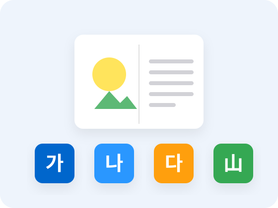

STEP 1
예비 초등부
한글 읽기와 어휘학습 입문 단계
수업 시스템
아이의 성장에 따라
아이의 성장에 따라
읽기 교육도 달라져야 합니다.
나비독서는 아이의 학년과 읽기 수준에 맞춰 4단계로 수업합니다.
STEP 1 · 이 단계의 목표
한글과 어휘에 친숙해지고
한글과 어휘에 친숙해지고
책 읽기의 기초를 형성합니다.
이 단계에서 길러지는 힘
- 글자와 소리를 연결해 또박또박 읽는 힘
- 쉬운 한자로 익히는 기초 어휘
- 책과 친해지는 즐거운 독서 습관

PROGRAM
예비 초등부
예비 초등부
핵심 프로그램
한글 읽기
글자와 소리를 연결해 낱말과 문장을 정확하게 읽습니다.
한자 기초 어휘
쉬운 한자로 낱말의 뜻을 익혀 어휘의 기초를 다집니다.
소리 내어 읽기
또박또박 소리 내어 읽으며 읽기 자신감을 키웁니다.
문장과 어법 이해
짧은 문장의 짜임과 바른 말 쓰기를 익힙니다.
독서 활동
그림책과 이야기로 책 읽는 즐거움을 경험합니다.
RECOMMEND